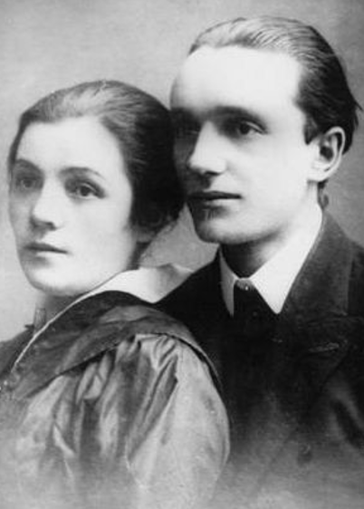
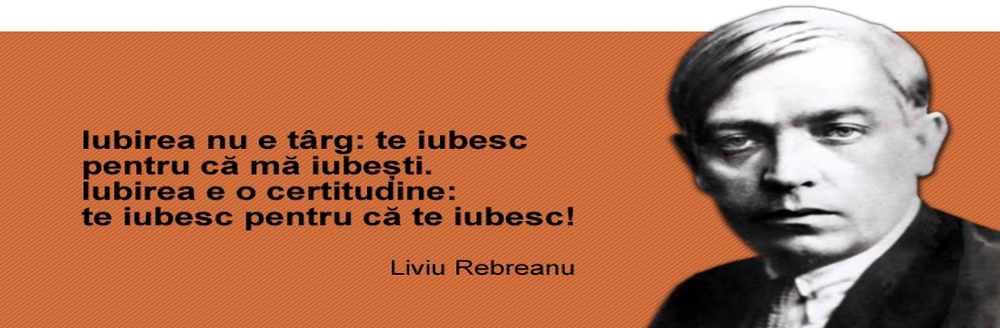

Cea mai frumoasă declarație de dragoste din literatura română
Îi aparține lui Liviu Rebreanu și i-a fost dedicată celei care avea să-i devină soție.
Liviu Rebreanu și Fanny Rădulescu s-au cunoscut pe terasa Oteteleșanu din București (situată pe locul unde se află astăzi Palatul Telefoanelor), unde, pe atunci, se adunau mai toți artiștii vremii. I-o prezentase bunul său prieten, Emil Gârleanu. Ea, absolventă a Conservatorului de Artă Dramatică, era actriță și scriitoare. El stârnise deja interesul prin nuvele publicate în revistele literare. Iată cum își mărturisea Liviu Rebreanu, în 1912, iubirea pentru Fanny. “Îţi mulţumesc din suflet că te iubesc: acesta e cântecul iubirii” “Mulți cred că se laudă zicând: “Iată inima mea! Vi-o dau… n-am nevoie de dânsa… Mie nu mi-e frică de chinurile geloziei, mie nu-mi pasă de tremurările înfrigurate ale iubirii! De un singur lucru mă feresc: să nu fiu banal! Aș vrea să sufăr, aș vrea să scrâșnesc din dinți, să-mi smulg părul și să adorm cu genele muiate în lacrimi! Astfel, cel puțin, aș ști că trăiesc, aș înțelege, poate, ce înseamnă a iubi… Dar zilele trec, veșnic aceleași, searbede și plictisitoare, și viața mea se scurge întocmai ca viața unei gâze netrebnice… Eu nu pot avea o iubire; eu nu pot avea decât iubiri. Iubirile acestea însă răsar repede, pâlpâie o clipă și apoi pier, dispar pentru totdeauna, parc-ar fi fost niște visuri pe care le uiți îndată ce te-ai deșteptat din somn…” O, şi eu credeam că nu pot iubi, şi eu îmi închipuiam că vina nu este în mine, ci în ele, în femeile care nu merită să fie iubite!… Astăzi însă știu și înțeleg că iubirea este făcută pentru cei umili, că cei mândri nu vor putea iubi niciodată… Cei mândri își închipuiesc că nu au trebuinţă de inimă; ei nu vreau decât să cucerească, mereu să biruiască; ei cred, în sfârşit, că şi în iubire succesul e tot. Dorinţele lor poate se vor împlini, poftele lor poate vor fi mulţumite, da… dar, vai, iubirea n-au s-o cunoască niciodată. Căci iubirea cere supunere, o supunere oarbă, ca şi credinţa. În iubire n-ai să fii convins niciodată, n-ai să aştepţi probe niciodată. Tot ce nu e supunere şi devotament nu e iubire. Trebuie să trăieşti mult, trebuie să suferi mult, trebuie să pricepi mult pentru ca inima ta să fie în stare a primi iubirea. Cei ambiţioşi, cei mândri, cei obraznici şi nerecunoscători nu pot şti ce este iubirea şi, aşa, cei mai mulţi dintre noi de-abia la vârsta de cinzeci de ani începem să înţelegem iubirea, atunci, deci, când e prea târziu… Pe mine viaţa m-a frământat, m-a umilit; mie viaţa mi-a mulcomit glasul. Astfel am ajuns să nu mai spun că ele nu merită să fie iubite, ci strig pretutindeni: ştiu să iubesc fiindcă am învăţat a plânge, a suspina şi a mă resemna! Poezia, zic unii, a falsificat iubirea. Poezia a făcut cântece, statui, versuri din sentimentul simplu şi firesc ce a fost odinioară iubirea, a făcut nebuni din oameni care, şi altmintrelea, erau cam porniţi spre nebunie, a făcut gurmanzi din oameni care până atunci erau înfometaţi. Eu însă zic că nu există poet, muzicant, pictor sau sculptor mai mare ca un îndrăgostit. Pentru ca artistul să înţeleagă poezia cea mare a suferinţei trebuie mai întâi să fi fost îndrăgostit. Nu poeţii au făcut iubirea, ci iubirea a făcut pe poeţi! Iar eu, care citesc bucuros în stele şi-mi fac o plăcere dintru a aşterne pe hârtie slovă lângă slovă, pot să jur că în slovele noastre umile sunt scrise toate tainele de amor ale cerului înstelat. Cel ce pricepe viaţa stelelor pricepe şi iubirea omenească! Iubirea nu cunoaşte cuvintele credincios şi necredincios. Iubeşti pe altul, va să zică eu nu te iubesc: acesta nu e cântecul iubirii. Omul îndrăgostit nu zice niciodată: m-ai înşelat. Iubirea nu-ţi cere socoteală de sărutările ce ai dat sau nu ai dat altora. Iubirea nu-ţi scormoneşte trecutul şi nu-ţi cercetează prezentul. Viitorul este nădejdea ei; viitorul este egoismul ei. Nădejdea cea deznădăjduită, mângâierea cea nemângâiată sunt balsamul ei, care e tot atât de dulce ca şi suferinţa, ca şi iubirea. Iubeşti, suferi, trăieşti: iată troiţa iubirii. Sărutările îţi alină setea, dar lacrimile îţi trezesc în suflet doruri mari, istovitoare şi dragi, pe care nu ţi le pot alina nici sărutările. Din ochi picură lacrimile, izvorul cel veşnic al iubirii; din iubire picură cântecul, poezia, frumosul, izvorul cel veşnic al lacrimilor. Liviu Rebreanu și Fanny s-au căsătorit în 1921. Și avea să o iubească pentru tot restul zilelor. Iar avea nu doar că aveai să-i răspundă cu aceeași dragoste, dar avea să-și abandoneze cariera, punându-și soțul și familia pe primul plan. La aproape două decenii de la moartea lui Liviu Rebreanu, Fanny avea să amintească în volumul memorialistic “Cu soțul meu“, că această Mărturisire, publicată pentru prima dată în anul 1912, în Almanahul Societății Scriitorilor Români, a fost prima cerere discretă în căsătorie. Și, în același volum, Fanny avea să povestească un fapt mai puțin știut despre noaptea de 27 noiembrie 1885, noaptea în care s-a născut Liviu Rebreanu: “Dinspre răsărit, o ploaie de stele răspândi deodată o lumina uriașă. Era sfârșitul cometei Bianca. Impresionat, tânărul soț strigă: «Ludovico, afară ploua cu stele!» Peste câteva minute, tânăra soție de dascăl era mama unui copil voinic, primul născut din cei treisprezece pe care îi va avea.” 